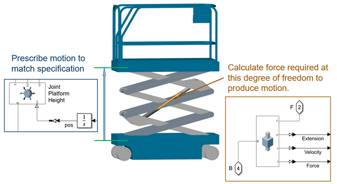
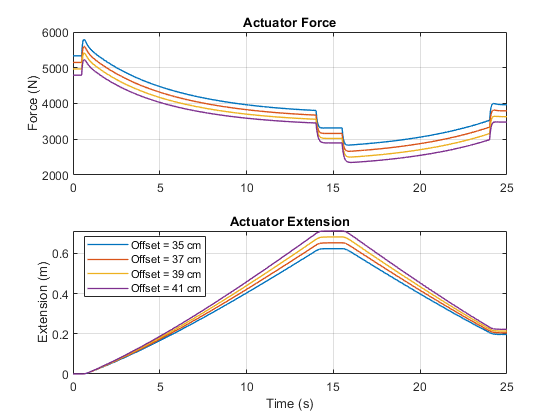
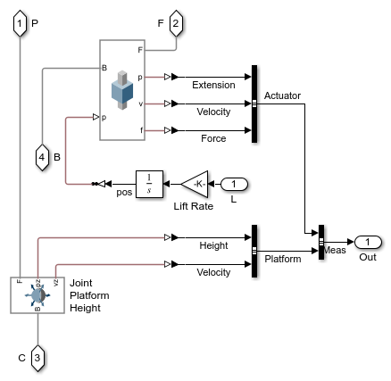

Scissor Lift Test Environment
This example shows a scissor lift modeled in Simscape Multibody. The lift is run through some simple tests to explore requirements for the actuator and see how the entire system behaves.
The model contains three variants of the actuation system. Inverse dynamics are used in the abstract variants to derive actuator sizing information from the performance specification. A hydraulic network enables the designer to see the effect of the chosen hardware on the behavior of the overall design.
Contents
Model

Scissor Lift Subsystem
This subsystem shows the model of the scissor lift. The scissor mechanism has three stages of folding arms that constrain the movement of the platform relative to the cart. An actuator extends and contracts to raise and lower the platform. The actuator model can be configured for tests to refine high-level requirements, such as required force, or to investigate details of the hydraulic design.
Stage 1 Subsystem
Each stage of the mechanism is modeled using four links. The links are connected in two pairs at the center by pin and can rotate relative to one another. The pairs are connected by two shafts, one at the front connecting the outer pair of links and one at the rear connecting the inner pair of links. Revolute joints connect the stages and constrain the motion of the mechanism. There is only one degree of freedom in the entire scissor mechanism.
Simscape Multibody enables you to create parameterized mechanisms and reuse them in your model. The pair of links on the left and right sides of the lift are created using the same subsystem (LX and RX below). Selecting left or right in the subsystem mask adjusts parameters within the subsystem to configure the linkage for assembly on the left or right side of the scissor mechanism. Similarly, the bracket subsystem is the same in stage 1 and stage 3. Mask parameters set the position relative to the end of the inner links.
Parameterized components enable rapid assembly of mechanisms. The parts below were created by combining Simscape Multibody Solid and Rigid Transform blocks to create parameterized parts.
Evaluating Performance Specification using Inverse Dynamics
Simulation is used to determine the actuator force and speed required to lift the platform. Simscape Multibody enables easy mapping of performance specification to the required test.
The specification states that the platform must reach maximum height within 16 seconds. Simscape Multibody enables you to prescribe the vertical motion of the platform and calculate the force that the actuator acting between stages 1 and 3 must provide. In a single simulation run you can solve an inverse dynamics problem where motion is prescribed along one degree of freedom and the calculated force is applied to a separate degree of freedom.
To achieve this, motion is prescribed along the z-axis of Joint Platform Height. This is a 6-DOF joint that only constrains motion along the positive z-axis of the frame attached to its B port. The Prismatic Joint constrains motion along the axis of the actuator. This joint is configured to output the force required to produce the motion of the mechanism. With these two joints in this configuration, we map the performance specification to the desired test to determine the requirements for our actuator.
Diagram showing test configuration

Subsystem in model
Parameter Sweep on Bracket Attachment Point
Running a parameter sweep on the bracket attachment point makes it possible to evaluate options for the design. As the attachment point moves towards the center of the linkage, the required force goes down but the required travel goes up. Using runtime parameters, Fast Restart and parallel computing accelerate parameter sweeps and enable a more complete exploration of the design space.

Ideal Actuation
In the next step of refining the model, an ideal actuator can be used to raise and lower the platform. An input signal specifies the extension and contraction of the actuator, and inverse dynamics is used to calculate the force required. This abstract model of the actuator can be connected to the control system, enabling the simulation to calculate the force required of the actuator in the context of the system-level design.
Diagram showing test configuration
Subsystem in model
Hydraulic Actuation
The model can be configured so that a hydraulic network modeled in Simscape Fluids extends and contracts the actuator. A 3-Way valve controls the flow of hydraulic fluid into and out of a single-acting hydraulic cylinder. This model assumes that the pump is sized to provide a nearly constant supply of hydraulic pressure regardless of the load. The hydraulic network interfaces with the prismatic joint.
In this configuration there is no prescribed motion. The hydraulic network determines the pressure in the cylinder and the force it applies on the mechanical system. The mechanical system is a load on the cylinder. During simulation the equations for the mechanical and hydraulic systems are solved simultaneously at each time step.
The plots below show the actuator extension and the force applied during this test. Oscillations due to the hydraulic network are visible.

Driving and Steering
Modeling the normal and friction force between each wheel and the floor enables our scissor lift model to drive and steer. This enables us to test logic for speed limits when the platform is raised and lowered and to measure the runtime for electric and hydraulic designs.
The plot below shows the path of the scissor lift during this test.
Simulink Dashboard Blocks for Manual input
The model can be configured to accept manual input. Simulink dashboard blocks are included in one of the variants. Pushing buttons will let you drive, steer, raise and lower the platform, and extend or retract the platform extension.
Dashboard Variant of Input Subsystem